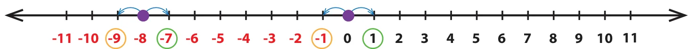
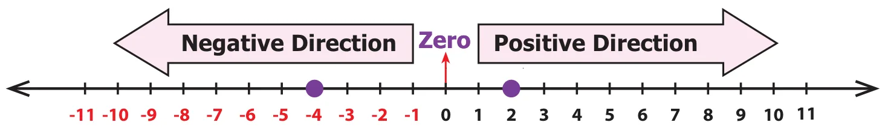
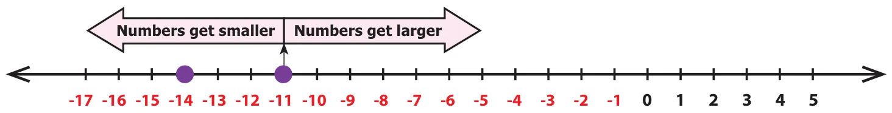

We have already seen the ordering of numbers in the set of natural and whole numbers. The ordering is possible for integers also.
2.3.1 Predecessor and Successor of an Integer
Recall that for a given number its predecessor is one less than it and its successor is one more than it. This applies for integers also.
Example 5 Find the predecessor and successor of i) 0 and ii) \(-8\) on a number line.
Solution
Place the given numbers on the number line then move one unit to their right and left to get the successor and the predecessor respectively.

We can see that the successor of 0 is \(+1\) and the predecessor of 0 is \(-1\) and the successor of \(-8\) is \(-7\) and the predecessor of \(-8\) is \(-9\).
Note
- Every positive integer is greater than each of the negative integers. Example: \(3 > -5\)
- 0 is less than every positive integer but greater than every negative integer. Example: \(0 < 2\) but \(0 > -2\)
2.3.2 Comparing Integers
Ordering of integers is to compare them. It is very easy to compare and order integers by using a number line.
When we move towards the right of a number on the number line, the numbers increase in value. On the other hand, when we move towards the left of a number on the number line, the numbers decrease in value.
We know that \(4 < 6\), \(8 > 5\) and so on. Now let us consider two integers say \(-4\) and 2. Mark them on the number line as shown below.

Fix \(-4\) now. See whether 2 is to the right or the left of \(-4\). In this case, 2 is to the right of \(-4\) and in the positive direction. So, \(2 > -4\) or otherwise \(-4 < 2\).
Example 6 Compare \(-14\) and \(-11\)
Solution
Draw number line and plot the numbers \(-14\) and \(-11\) as follows.

Fixing \(-11\), we find \(-14\) is to the left of \(-11\). So, \(-14\) is smaller than \(-11\). That is,
\(-14 < -11\).
Think
For two numbers, say 3 and 5, we know that \(5 > 3\). Will there be a change in the inequality if both the numbers have negative sign before them?
Activity
Prepare positive integer number cards from 1 to 10 and negative integer number cards from \(-1\) to \(-10\). Shuffle them well and keep them upside down. Call students one by one, ask them to select any two number cards and make them to find which is greater of the two numbers.
Example 7 Arrange the following integers in ascending order:
\(-15, 0, -7, 12, 3, -5, 1, -20, 25, 18\)
Solution
Step 1: First, separate the positive integers as 12, 3, 1, 25, 18 and the negative integers as \(-15, -7, -5, -20\)
Step 2: We can easily arrange positive integers in ascending order as 1, 3, 12, 18, 25 and negative integers in ascending order as \(-20, -15, -7, -5\).
Step 3: As 0 is neither positive nor negative, it stays at the middle and now the arrangement \(-20, -15, -7, -5, 0, 1, 3, 12\), 18 and 25 is in ascending order.
Try these
- Is \(-15 < -26\)? Why?
- Which is smaller \(-3\) or \(-5\)? Why?
- Which is greater 7 or \(-4\)? Why?
- Which is the greatest negative integer?
- Which is the smallest positive integer?
Integers ICT CORNER
Expected Outcome
Step 1
Open the Browser by typing the URL Link given below (or) Scan the QR Code. GeoGebra work sheet named “Integers” will open. There is a worksheet under the title Number Line basics.
Step 2
Click on the “New Number” to get new question and type your answer in the respective check boxes, next to Predecessor and Successor and press enter..
Browse in the link:
Integers: https://ggbm.at/mt7qxxn7 or Scan the QR Code.